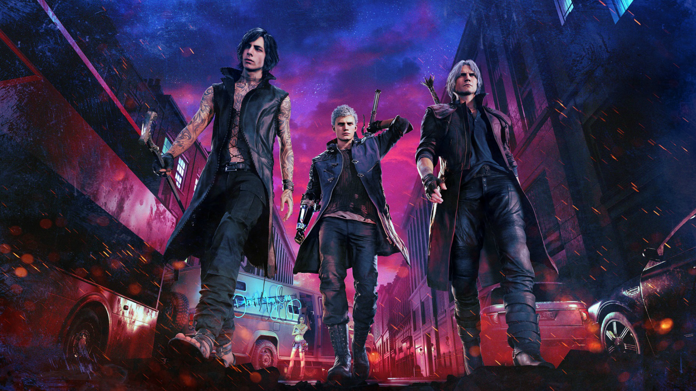

Devil May Cry 5
Devil May Cry 5 is a 2019 action-adventure game developed and published by Capcom. The game is the sixth installment overall and the fifth mainline installment in the Devil May Cry series. The plot follows returning protagonists Nero and Dante as they are hired by a mysterious stranger named V to stop the Demon King Urizen. Players control Nero, Dante, and V, who each feature a different playstyle.